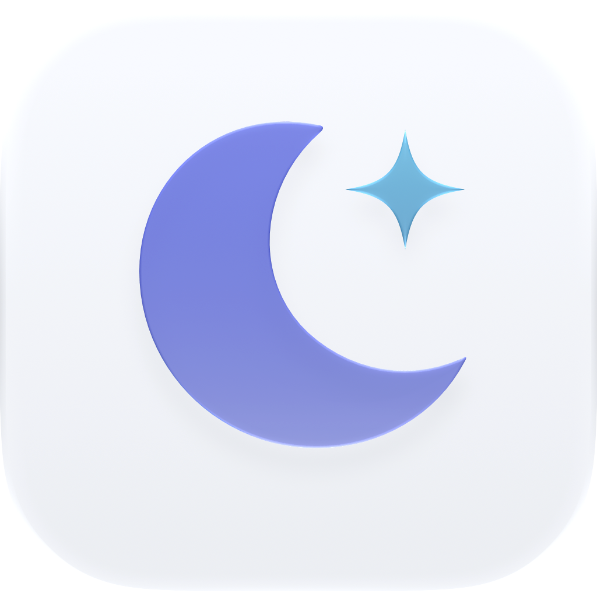
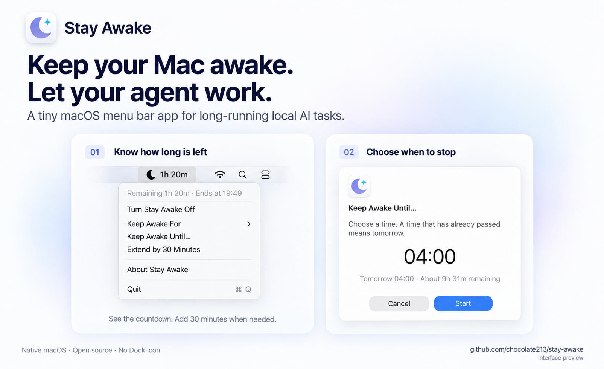

01 / KEEP AWAKE FOR↗
Your kind of long night.
From 15 minutes to 8 hours. Set a custom duration, or keep going until you say stop.
15 minutes2 hours8 hoursOn

Stay AwakeYOUR AGENT’S NIGHT SHIFT
Let your local AI agent keep building.
Stay Awake keeps your Mac awake,
one little moon at a time.
macOS 11+ · Free & open source
caffeinateNO SLEEP SETTINGS TO CHANGEFREE. OPEN SOURCE. YOURS.A LITTLE MOON. A LOT OF MOMENTUM.
One more test. One more build. One more agent iteration.
Prevent idle sleep without changing your system settings.
Just set your session, and let the work continue.
01 / A WINDOW INTO THE NIGHT
A tiny app in your menu bar.
A clear finish line for your session.
A little longer. A lot more done.
~/your-next-idea → agent
# A little less waiting. A little more momentum.
✓ Read the project instructions
✓ Map out the implementation
✓ Make the next small improvement
Running the test suite
02 / THE RIGHT AMOUNT OF AWAKE
All the control you need.
None of the noise you don’t.
From 15 minutes to 8 hours. Set a custom duration, or keep going until you say stop.
Choose a clock time. Already passed today? Stay Awake knows you mean tomorrow.
Your finish line. Down to the minute.A menu bar countdown and a quick extension. No Dock icon. No expiry notifications.
Native controls. English & 简体中文.
Interface illustration. Appearance varies by macOS version.
LET THE NEXT IDEA RUN A LITTLE LONGER
Download. Move to Applications. Click the moon.
Your next session starts here.
macOS 11+ · Free & open source
A SMALL APP. A SIMPLE SETUP.
Download the latest release ZIP.
Move Stay Awake.app to Applications.
Open it. Find the moon in your menu bar.
Releases are ad-hoc signed, not notarized. If macOS blocks opening, review the app in System Settings → Privacy & Security. Installation guide ↗
Release downloads, checksum verification, or a build from source. The instructions are ready.
Read the agent instructions ↗Stay Awake prevents idle sleep. It doesn’t bypass lid-close sleep, run agents, or override their approvals and usage limits.